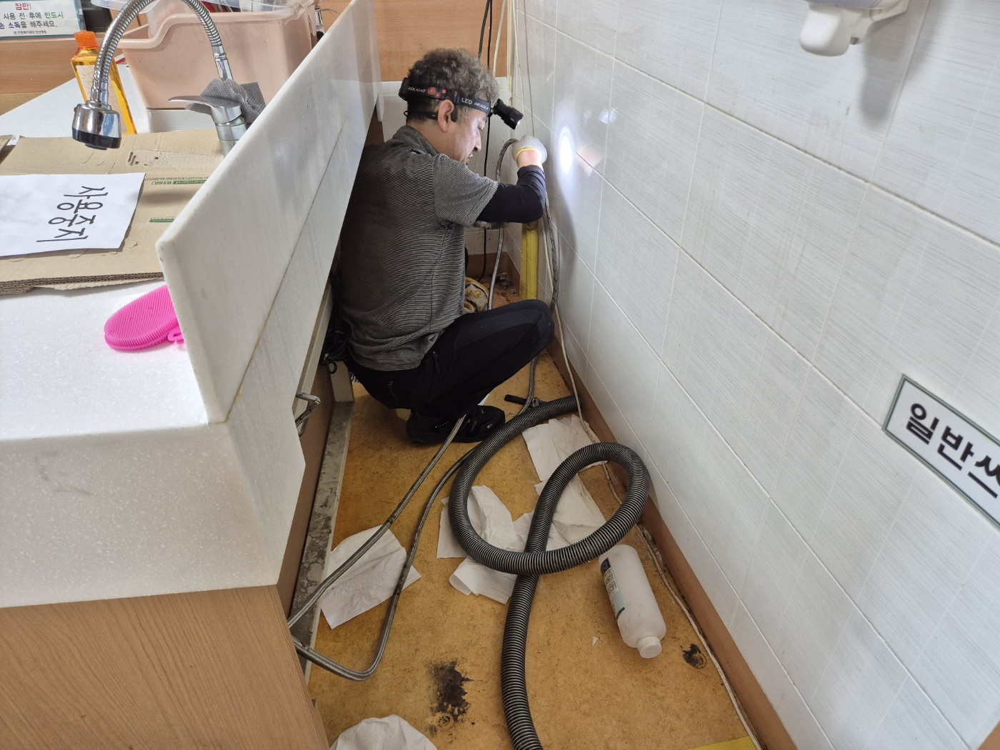
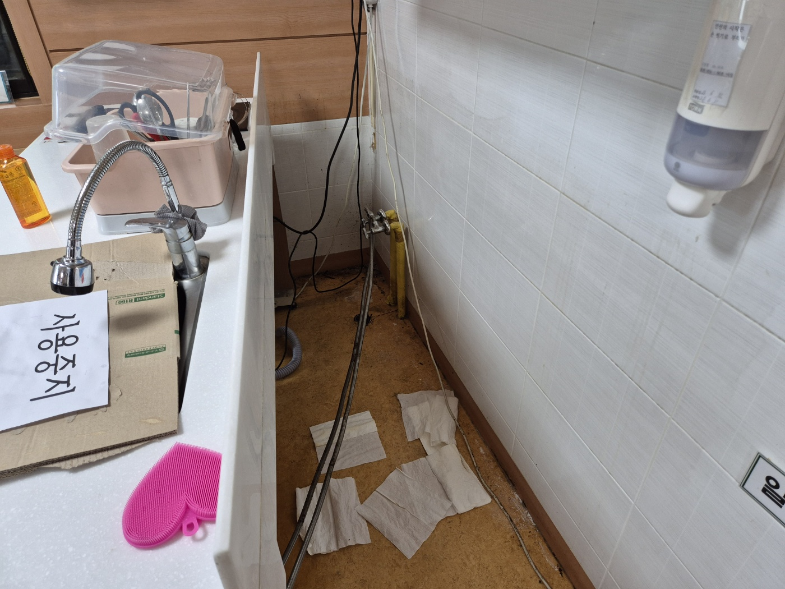
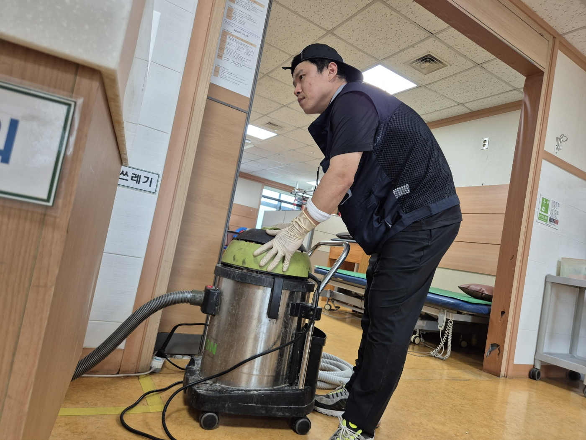
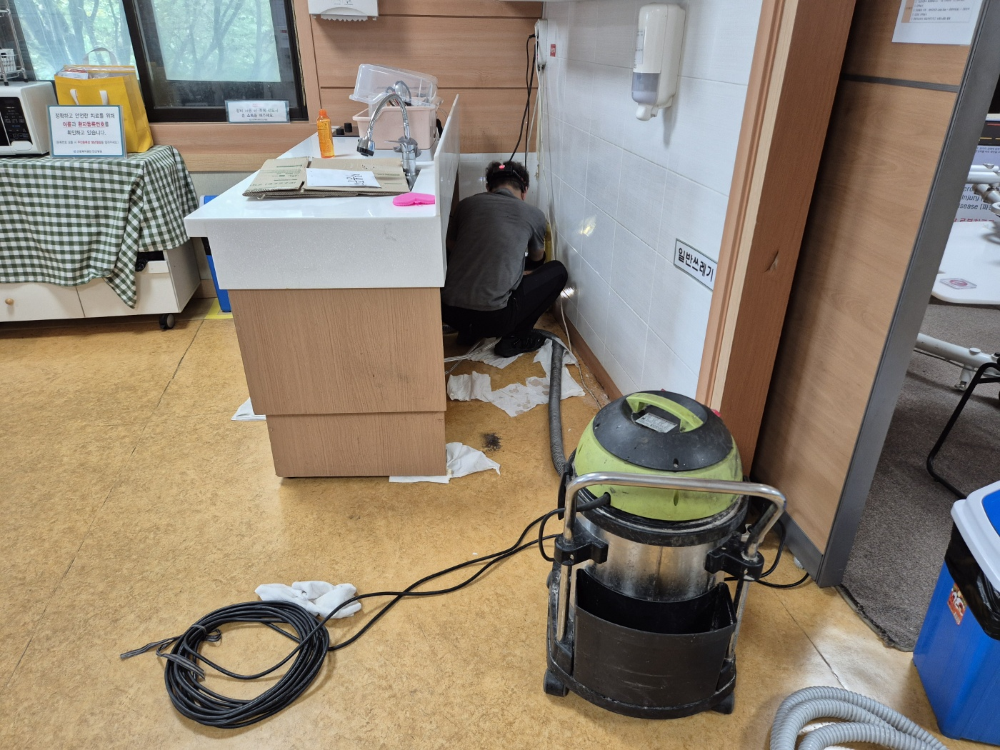
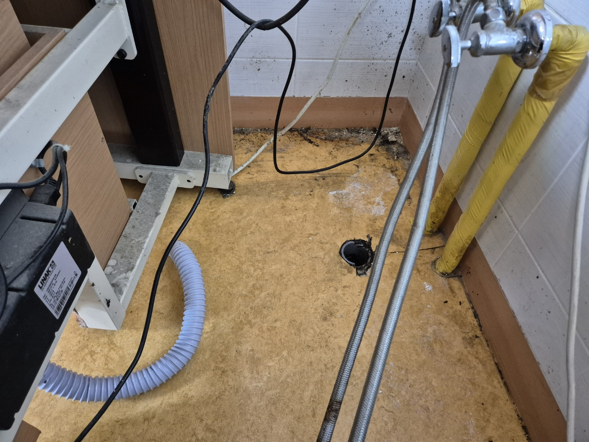
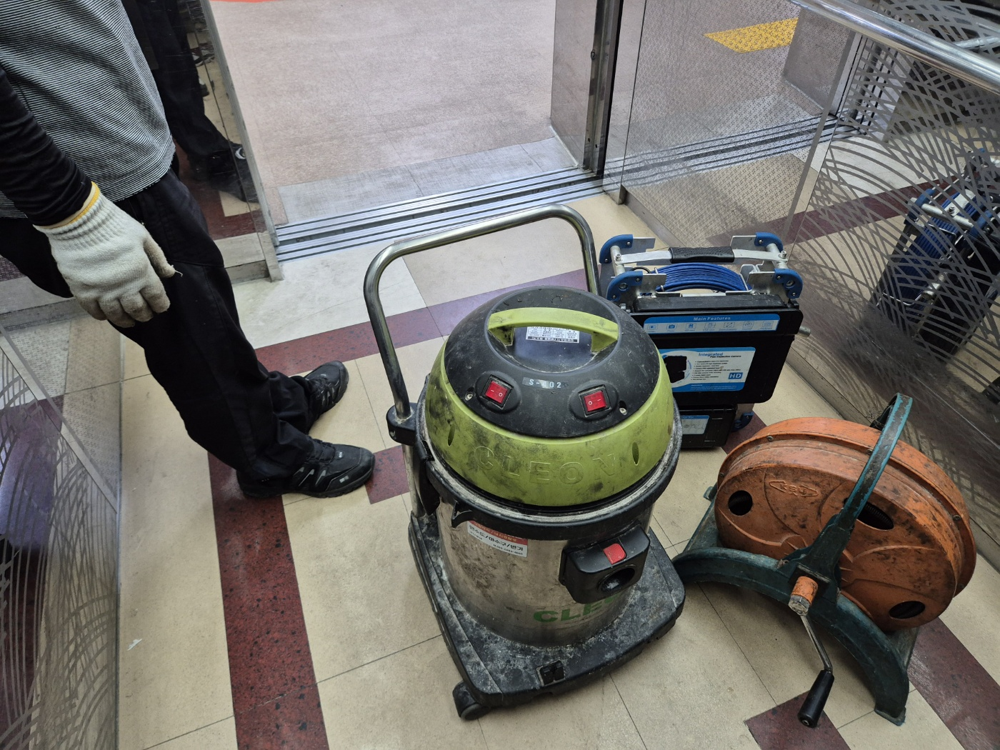

안녕하세요.. 고고고 설비입니다.. 오늘은 평택시 이충동에 있는 병원 재활치료실 개수대 하수구막힘 신고를 받고 다녀온 현장입니다.
환자분들이 치료 사이사이 손을 씻으시는 개수대였는데, 물이 아예 안 내려가서 급하게 "사용금지" 표시부터 붙여둔 상태였어요.. 병원이다 보니 하루라도 방치하면 불편이 바로 커져서, 접수받자마자 서둘러 출동했습니다.

치료용 침대가 놓인 복도를 지나 석션기를 개수대 앞까지 끌고 왔습니다. 환자분들이 오가는 공간이라 소음이나 동선에 방해되지 않게 통로를 최대한 안 막고 조심스럽게 자리를 잡았어요.

개수대 하부장 안쪽으로 들어가 헤드랜턴을 켜고 배관 연결부부터 하나씩 확인했습니다. 공간이 워낙 좁아서 몸을 완전히 구겨 넣어야 했고, 전동 침대 조작기 배선까지 얽혀있어서 조심스럽게 움직여야 했어요.

배관을 따라가다 보니 바닥에 별도로 뚫려있는 배수구가 있었는데, 여기도 함께 막혀있는 상태였습니다.. 개수대와 바닥 배수구 두 곳을 같이 손봐야 하는 상황이었어요.

석션기로 고여있던 오수부터 흡입해내고, 안쪽 깊은 구간은 드럼 샤프트를 넣어 막힌 부분을 마저 뚫었습니다.
사용했던 석션기, 내시경 장비, 드럼 샤프트까지 정리해서 챙겨 나오면서 물을 다시 흘려보내 통수 상태를 확인했습니다. 개수대와 바닥 배수구 모두 정상적으로 배수되는 걸 확인하고서야 "사용금지" 표시를 떼어드릴 수 있었어요.

병원처럼 여러 환자분이 함께 쓰시는 공간은 막힘이 생기면 불편이 바로 커지는 만큼, 조금이라도 배수가 느려지면 미리 점검받으시는 걸 권해드립니다.
고고고 설비는 주택, 아파트, 원룸, 상가, 공장의 생활 하수 오수 배관을 관리해 주는 업체입니다. 고고고 설비에 전화 주시면 친절상담 정확한 진단 확실한 해결로 보답해 드리겠습니다!!